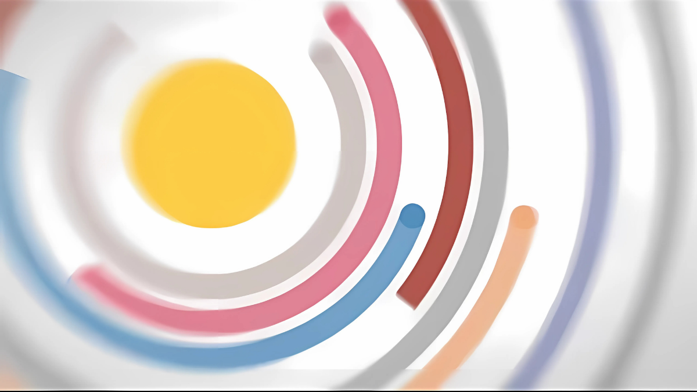

Videos
-
CGP Grey. “Is Pluto a Planet?” YouTube, 29 May 2012,
www.youtube.com/watch
?v=Z_2gbGXzFbs&list= . Accessed 3 Mar 2025.PLqs5ohhass_ROHZ67gH Sni0bhtte9P4nR&index=2 - CGP Grey. ‚Äúüåç Which Planet Is the Closest?‚Äù YouTube, 30 Oct. 2019,
www.youtube.com/watch
?v=SumDHcnCRuU . Accessed 3 Mar. 2025.&list=PLqs5ohhass_ ROHZ67gHSni0bhtte9P4nR
-
Kurzgesagt – In a Nutshell. “Everything You Need to Know about Planet Earth.” YouTube, 4 Aug
2014,
www.youtube.com/watch
?v=JGXi_9A__Vc&list . Accessed 3 Mar. 2025.=PLlKADClY7ZgZ9MdvYB 7jurMeD8hUdI2Ja&index=11 -
Kurzgesagt – In a Nutshell. “The Solar System -- Our Home in Space.” YouTube, 22 Aug 2013,
www.youtube.com/watch
?v=KsF_hdjWJjo&list . Accessed 3 Mar. 2025.=PLlKADClY7ZgZ9MdvYB7 jurMeD8hUdI2Ja&index=12

-
National Geographic. “Venus 101 | National Geographic.” YouTube, 26 Oct 2018,
www.youtube.com/watch
?v=BvXa1n9fjow . -
Rober, Mark. “DRONE Solar System Model- How Far Is Planet 9?” YouTube, YouTube Video, 9 Mar 2016,
www.youtube.com/watch
?v=pR5VJo5ifdE . Accessed 22 Jan 2020.